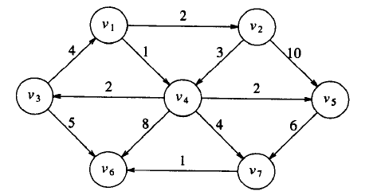
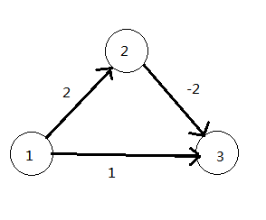

本文是博主对图论算法的复习做出的整理，包括如下内容
-
最短路径
- dijkstra
- SPFA
- floyd
- 用SPFA解决差分约束
-
最小生成树MST
- prim
- kruskal
- 次小生成树
-
二分图
- 最大匹配和最小覆盖
最短路问题
无权最短路可以BFS解决，这里只讨论加权的。
一、dijkstra
Dijkstra单源最短路算法，即计算从起点出发到每个点的最短路。Dijkstra常常作为其他算法的预处理。
使用邻接矩阵的时间复杂度为O(n^2)
用邻接表+优先队列（堆）的时间复杂度为O((m+n)logn)近似为O(mlogn)
1. 算法的思想和过程
每次选择一个未访问过的到已经访问过（标记为Known）的所有点的集合的最短边，并用这个点进行更新，过程如下：

Dv为最短路，而Pv为前面的顶点。
1.初始
| V | Known | Dv | Pv |
|---|---|---|---|
| V1 | F | 0 | 0 |
| V2 | F | ∞ | 0 |
| V3 | F | ∞ | 0 |
| V4 | F | ∞ | 0 |
| V5 | F | ∞ | 0 |
| V6 | F | ∞ | 0 |
| V7 | F | ∞ | 0 |
2.在v1被标记为已知后的表
| V | Known | Dv | Pv |
|---|---|---|---|
| V1 | T | 0 | 0 |
| V2 | F | 2 | V1 |
| V3 | F | ∞ | 0 |
| V4 | F | 1 | V1 |
| V5 | F | ∞ | 0 |
| V6 | F | ∞ | 0 |
| V7 | F | ∞ | 0 |
3.下一步选取v4并且标记为known，顶点v3,v5,v6,v7是邻接的顶点，而他们实际上都需要调整。如表所示:
| V | Known | Dv | Pv |
|---|---|---|---|
| V1 | T | 0 | 0 |
| V2 | F | 2 | V1 |
| V3 | F | 3 | V4 |
| V4 | T | 1 | V1 |
| V5 | F | 3 | V4 |
| V6 | F | 9 | V4 |
| V7 | F | 5 | V4 |
4.接下来选取v2,v4是邻接点，但已经是known的，不需要调整，v5是邻接的点但不做调整，因为经过v2的值为2+10=12而长为3的路径已经是已知的。
| V | Known | Dv | Pv |
|---|---|---|---|
| V1 | T | 0 | 0 |
| V2 | T | 2 | V1 |
| V3 | F | 3 | V4 |
| V4 | T | 1 | V1 |
| V5 | F | 3 | V4 |
| V6 | F | 9 | V4 |
| V7 | F | 5 | V4 |
5.接下来选取v5，值为3，v73+6>5不需调整，然后选取v3，对v6的距离下调到3+5=8
| V | Known | Dv | Pv |
|---|---|---|---|
| V1 | T | 0 | 0 |
| V2 | T | 2 | V1 |
| V3 | T | 3 | V4 |
| V4 | T | 1 | V1 |
| V5 | T | 3 | V4 |
| V6 | F | 8 | V3 |
| V7 | F | 5 | V4 |
6.再选下一个顶点是v7，v6变为5+1=6
| V | Known | Dv | Pv |
|---|---|---|---|
| V1 | T | 0 | 0 |
| V2 | T | 2 | V1 |
| V3 | T | 3 | V4 |
| V4 | T | 1 | V1 |
| V5 | T | 3 | V4 |
| V6 | F | 6 | V7 |
| V7 | T | 5 | V4 |
7.最后选取v6
| V | Known | Dv | Pv |
|---|---|---|---|
| V1 | T | 0 | 0 |
| V2 | T | 2 | V1 |
| V3 | T | 3 | V4 |
| V4 | T | 1 | V1 |
| V5 | T | 3 | V4 |
| V6 | T | 6 | V7 |
| V7 | T | 5 | V4 |
3. 局限性
Dijkstra没办法解决负边权的最短路径，如图

运行完该算法后，从顶点1到顶点3的最短路径为1,3，其长度为1，而实际上最短路径为1,2,3，其长度为0.（因为过程中先选择v3，v3被标记为已知，今后不再更新）
4.算法实现
1．普通的邻接表
用vis作为上面标记的known，dis记录最短距离（记得初始化为一个很大的数）。
1 | void dijkstra(int s) |
2.邻接表+优先队列。
要重载个比较函数.
1 | struct point |
二、SPFA（bellman-ford）
1. 原理过程：
bellman-ford算法的基本思想是，对图中除了源顶点s外的任意顶点u，依次构造从s到u的最短路径长度序列dist[u],dis2[u]……dis(n-1)[u]，其中n是图G的顶点数，dis1[u]是从s到u的只经过1条边的最短路径长度，dis2[u]是从s到u的最多经过G中2条边的最短路径长度……当图G中没有从源可达的负权图时，从s到u的最短路径上最多有n-1条边。
因此，dist(n-1)[u]就是从s到u的最短路径长度，显然，若从源s到u的边长为e(s,u)，则
- dis1[u]=e(s,u)。
- k>1, dis(k)[u]满足递归式：dis(k)[u]=min{dis(k-1)[v]+e(v,u)}
bellman-ford最短路径就是按照这个递归式计算最短路的。
SPFA是bellman-ford算法的队列实现版本（貌似也改进了点）
SPFA的实现如下：用数组dis记录更新后的状态，cnt记录更新的次数，队列q记录更新过的顶点，算法依次从q中取出顶点v,按照dis(k)[u]=min{dis(k-1)[v]+e(v,u)}的递归式更新。在计算过程中，一旦发现顶点K有cnt[k]>n，说明有一个从顶点K出发的负权圈，此时没有最短路，应终止算法。否则，队列为空的时候，算法得到G的各顶点的最短路径长度。
2.实现：
1 | void spfa(int s) |
3. 优化
SLF（Small Label First）是指在入队时如果当前点的dist值小于队首， 则插入到队首， 否则插入到队尾。
LLL不太常用，我也没研究。
三、floyd
全称Floyd-Warshall。记得离散数学里面有Warshall算法，用来计算传递闭包。而数据结构每次都简称floyd，当时就觉得两个都差不多，有神马关系，后来google一下发现是同一个算法。。。。改个名字出来走江湖啊！！！！！
这个算法用于求所有点对的最短距离。比调用n次dijkstra的优点在于代码简单。
时间复杂度为O(n^3)
1. 原理过程：
这是一个dp（动态规划的过程）
dis[i][j]=min(dis[i][j],dis[i][k]+dis[k][j]);
即从顶点i到j且经过顶点k的最短路径长度。
2.实现：
1 | void floyd() |
四、用SPFA解决差分约束问题
差分约束系统就是给出一些形如x-y<=b不等式的约束，问你是否有满足问题的解，或者求最小，最大解。
这个问题的神奇之处是可以转化为图论的最短路问题。
1. 原理
对于图论的最短路径，有：对于d(v) <= d(u) + w(u, v) ，而差分约束系统的解法利用到了单源最短路径问题中的三角形不等式。
移项得：d(v) - d(u) <= w(u, v)，是不是和上面的x-y<=b的一样？
是的，这就是转化为最短路径算法的原理。
2. 建图
差分约束最难的地方在于建图。
(1) 求最小的解
有一个序列，题目用n个整数组合 [ai，bi，ci]来描述它，[ai，bi，ci]表示在该序列中处于[ai，bi]这个区间的整数至少有ci个。如果存在这样的序列，请求出满足题目要求的最短的序列长度是多少。
我们可以设s[i]为从[1,i]闭区间内的整数个数。
那么显然对于组合[a，b，c] 我们有 s[b] - s[a-1] >= c (a-1是因为我们需要算上a）
还有：0<= s[b]-s[b-1] <=1
变形得
S[b]-S[b-1] >=0
S[b-1]-S[b] >=-1
接着，**对于求最小值的来说，我们用最长路来求解。**为什么是最长路？一开始把距离d设为无穷小，之后最长路的更新公式为：if(d[v] < d[u]+w(u,v)) d[v]=d[u]+w(u,v); 可以看到d[v]不断的增大，即当满足条件的时候为最小的解。
所以我们在建图的时候，需要满足最长路的三角不等式： d(v) >= d(u) + w(u, v) =>d(v) - d(u) >=w(u,v) 的形式=>从u到v连接一条权重为w(u,v)的边。
故本题中三个不等式都是如下的形式：
- s[b] - s[a-1] >= c
- S[b]-S[b-1] >=0
- S[b-1]-S[b] >=-1
题解见我CSDN：http://blog.csdn.net/murmured/article/details/18793199
(2) 求最大的解
一些母牛按升序排成一条直线。有两种要求，A和B距离(A<B)不得超过X，还有一种是C和D(C<D)距离不得少于Y，问可能的最大距离。如果没有输出-1，如果可以随便排输出-2，否则输出最大的距离。
题目按升序排，所以有：
s[i] - s[i-1] >=0
由题目的约束条件得到：
- B - A <= X
- D - C >= Y
因为题目求的是最大距离，故用最短路来求解
最短路三角不等式为 d(v) <= d(u) + w(u,v) => d(v) - d(u) <= w(u,v) =>从u到v连接一条权重为w(u,v)的边
所以我们都转化为小于等于的符号，所以有：
- s[i-1] - s[i] <=0
- B - A <= X
- C - D <= -Y
建完图后SPFA即可。（有负环说明无解输出-1 ， 1与n不连通说明可以随意摆放，没有约束嘛。输出-2，否则输出dis [n]）
题解见我CSDN：http://blog.csdn.net/murmured/article/details/18819955
（三）注意点
1.不等式取>=还是<=
当你在纠结用小于号大于号的时候，看看题目求的是最大还是最小，如果只是判断有木有解，那么大于号小于都可以，只不过要注意全部等式要统一。
当求解最大解，使用最短路径求解， 由图最短路径的三角不等式：
d(v) <= d(u) + w(u,v) => d(v) - d(u) <= w(u,v) =>从u到v连接一条权重为w(u,v)的边
求最大的解用最长路，为d(v) - d(u) <= w(u,v) 的形式
求最小的解用最短路，为d(v) - d(u) >= w(u,v) 的形式
2.图不连通
原图可能不是连通图，故需要加一个超级源点S，从S到任意的顶点边权为0，然后从该点出发。为什么？添加从虚点S到每个顶点的权为0的边.这是为了保证构造出来的图是连通的．由于虚点本身并不引入负圈,所以设置虚点以后最短路仍然存在,并且每个约束仍然满足.
或者差分约束不用什么附加顶点, 附加顶点的唯一用处就是保证图的连通性, 不让你有负环判不到的情况, 解决这种问题的最佳途径就是初始把所有顶点都加入队列, 并且将所有dis
置0, 这就相当于加了一个不存在的附加顶点, 它与所有的顶点的直连长度都是0.
当然推荐第二种，效率也高。
最小生成树 MST
一、prim
prim和dijkstra其实差不多，都是选取待选集合中到已选集合中距离最小的点。就是更新的方程不一样。
prim的dis指的是连接到已知顶点最小边的权值（也就是之后生成MST的边）
所以dis[j] = min(dis[j] , map[cur][j]);
代码实现如下：
1 | int prim() |
二、kruskal
kruskal的原理是将顶点分为若干个集合，每次选取不在集合内部的最小的边，不断的将各个集合连接起来，最后构成MST。
简单的说就是先按边排个序，然后遍历每条边，判断边的两个顶点是否在同一集合中（用并查集）
代码实现如下
1 | struct Edge{ |
三、次小生成树
二分图
一、基本概念
**二分图：**其所有顶点可以分成两个集合X和Y，在同一集合中的点都不相连，所有的边关联在两个顶点中，恰好一个属于集合X，另一个属于集合Y。
**二分图匹配：**在图论中，一个「匹配」（matching）是一个边的集合，其中任意两条边都没有公共顶点。
最大匹配：一个图所有匹配中，所含匹配边数最多的匹配，称为这个图的最大匹配。
完美匹配：如果一个图的某个匹配中，所有的顶点都是匹配点，那么它就是一个完美匹配。完美匹配一定是最大匹配但并非每个图都存在完美匹配。
**最小顶点覆盖：**在顶点集合中，选取一部分顶点，这些顶点能够把所有的边都覆盖了。在所有的顶点覆盖集中，顶点数最小的那个叫最小顶点集合。
**路径覆盖：**在图中找一些路径，这些路径覆盖图中所有的顶点，每个顶点都只与一条路径相关联。
**独立集：**在所有的顶点中选取一些顶点，这些顶点两两之间没有连线，这些点就叫独立集
二、几个关系
最大匹配 = 最小顶点覆盖
最大独立集 = 最小路径覆盖 =总节点数 – 最小顶点覆盖（最大匹配）
最小路径覆盖 = 总节点数 – 最小顶点覆盖（最大匹配） 的一种解释：如果无匹配，需要n条路径才能覆盖所有点，两个点匹配意味着将可以把它们用一条路径覆盖，路径数就可以减1
三、求解
求二分图最大匹配可以用最大流(Maximal Flow)或者匈牙利算法(Hungarian Algorithm)
1.匈牙利算法实现
1 | bool find(int a) |
如下的方式调用：
1 | for(int i=1;i<=n;i++) { |